Ortholog Divergence Report
Input: STOML3.valid.longest.fa · N sequences: 336 · Aligned length: 1133 codons
Reference: Sciurus_carolinensis
Quick risk overview
- LOW: 0
- INTERMEDIATE: 0
- HIGH: 56280


Composition & complexity per sequence
Saved as per_sequence_composition.csv. High low-complexity or repeat content can reduce BLAST sensitivity due to soft masking.
| id | GC | GC skew | CpG dens. | AA LCR frac | NT repeat frac | AA len | CDS len |
|---|---|---|---|---|---|---|---|
| Sciurus_carolinensis | 0.50379 | 0.00376 | 0.02085 | 0.1108 | 0.73958 | 352 | 1056 |
| Lynx_rufus | 0.52806 | -0.01952 | 0.03096 | 0.13746 | 0.69989 | 291 | 873 |
| Gymnogyps_californianus | 0.49941 | 0.02358 | 0.02358 | 0.16961 | 0.71614 | 283 | 849 |
| Vombatus_ursinus | 0.48339 | -0.00948 | 0.01835 | 0.09278 | 0.68499 | 291 | 873 |
| Castor_canadensis | 0.49474 | 0.03546 | 0.01933 | 0.16842 | 0.75614 | 190 | 570 |
| Ursus_americanus | 0.53623 | -0.0104 | 0.04129 | 0.13043 | 0.71014 | 299 | 897 |
| Pygoscelis_adeliae | 0.4947 | 0.04762 | 0.02241 | 0.16608 | 0.71967 | 283 | 849 |
| Microcaecilia_unicolor | 0.45433 | 0.05483 | 0.02494 | 0.06762 | 0.72479 | 281 | 843 |
| Melozone_crissalis | 0.51308 | 0.0643 | 0.01253 | 0.12628 | 0.71445 | 293 | 879 |
| Lontra_canadensis | 0.53608 | -0.01709 | 0.03899 | 0.15464 | 0.70218 | 291 | 873 |
| Phascolarctos_cinereus | 0.48391 | -0.00713 | 0.01496 | 0.13793 | 0.7023 | 290 | 870 |
| Apodemus_sylvaticus | 0.52331 | 0.02004 | 0.02917 | 0.09091 | 0.74592 | 286 | 858 |
| Mus_musculus | 0.52265 | 0.01778 | 0.03488 | 0.09059 | 0.741 | 287 | 861 |
| Tyto_alba | 0.49823 | 0.03546 | 0.02005 | 0.16608 | 0.68905 | 283 | 849 |
| Otolemur_garnettii | 0.53952 | 0.01486 | 0.03899 | 0.15464 | 0.74914 | 291 | 873 |
| Macaca_fascicularis | 0.49255 | 0.0093 | 0.02408 | 0.11684 | 0.73425 | 291 | 873 |
| Struthio_camelus | 0.47585 | 0.05941 | 0.01887 | 0.17668 | 0.7126 | 283 | 849 |
| Falco_biarmicus | 0.5 | 0.05828 | 0.03151 | 0.15734 | 0.75175 | 286 | 858 |
| Peromyscus_maniculatus_bairdii | 0.52729 | -0.01762 | 0.0314 | 0.10453 | 0.72706 | 287 | 861 |
| Ammospiza_caudacuta | 0.51991 | 0.06783 | 0.01595 | 0.12628 | 0.70762 | 293 | 879 |
| Chionomys_nivalis | 0.52149 | -0.01559 | 0.03256 | 0.13937 | 0.75842 | 287 | 861 |
| Gopherus_flavomarginatus | 0.47222 | 0.04348 | 0.01451 | 0.11232 | 0.6872 | 276 | 828 |
| Equus_caballus | 0.52405 | -0.0306 | 0.02618 | 0.09873 | 0.75865 | 395 | 1185 |
| Orycteropus_afer_afer | 0.48556 | -0.02703 | 0.02497 | 0.10236 | 0.75853 | 254 | 762 |
| Equus_quagga | 0.52574 | -0.02729 | 0.02618 | 0.09873 | 0.75865 | 395 | 1185 |
| Spea_bombifrons | 0.4538 | 0.03608 | 0.02576 | 0.12632 | 0.72281 | 285 | 855 |
| Vulpes_lagopus | 0.51736 | 0.00224 | 0.02897 | 0.13542 | 0.6875 | 288 | 864 |
| Perognathus_longimembris_pacificus | 0.50114 | 0.03872 | 0.02514 | 0.09932 | 0.74772 | 292 | 876 |
| Corvus_brachyrhynchos | 0.49941 | 0.08491 | 0.01533 | 0.07067 | 0.70082 | 283 | 849 |
| Capricornis_sumatraensis | 0.54809 | -0.00962 | 0.03562 | 0.10277 | 0.73781 | 253 | 759 |
| Mus_pahari | 0.52381 | 0.01552 | 0.03488 | 0.09059 | 0.72474 | 287 | 861 |
| Passer_domesticus | 0.49886 | 0.01979 | 0.0114 | 0.1549 | 0.7555 | 439 | 1317 |
| Marmota_flaviventris | 0.50913 | 0.02242 | 0.02286 | 0.13356 | 0.76712 | 292 | 876 |
| Gorilla_gorilla_gorilla | 0.4937 | 0.00696 | 0.02523 | 0.13058 | 0.74227 | 291 | 873 |
| Balaenoptera_ricei | 0.52463 | -0.00437 | 0.02752 | 0.09278 | 0.67468 | 291 | 873 |
| Mustela_putorius_furo | 0.53333 | 0.02817 | 0.03477 | 0.12676 | 0.71737 | 355 | 1065 |
| Athene_cunicularia | 0.4614 | -0.01901 | 0.01933 | 0.06316 | 0.71053 | 190 | 570 |
| Pezoporus_occidentalis | 0.48333 | 0.06897 | 0.01549 | 0.11071 | 0.69881 | 280 | 840 |
| Hyla_sarda | 0.46645 | -0.01624 | 0.02492 | 0.06169 | 0.77273 | 308 | 924 |
| Manis_pentadactyla | 0.57961 | -0.02372 | 0.04931 | 0.13058 | 0.70103 | 291 | 873 |
| Suncus_etruscus | 0.50505 | 0.02769 | 0.01866 | 0.12587 | 0.7568 | 429 | 1287 |
| Panthera_tigris | 0.53036 | -0.00648 | 0.03211 | 0.13746 | 0.69301 | 291 | 873 |
| Hippopotamus_amphibius_kiboko | 0.54321 | -0.03535 | 0.03984 | 0.11111 | 0.72565 | 243 | 729 |
| Oryx_dammah | 0.54677 | -0.02169 | 0.03826 | 0.10277 | 0.73518 | 253 | 759 |
| Cuculus_canorus | 0.48174 | 0.04156 | 0.01651 | 0.16961 | 0.68551 | 283 | 849 |
| Muntiacus_reevesi | 0.54018 | -0.01951 | 0.03694 | 0.10277 | 0.73913 | 253 | 759 |
| Dendropsophus_ebraccatus | 0.48763 | -0.01932 | 0.0283 | 0.06714 | 0.77267 | 283 | 849 |
| Tupaia_chinensis | 0.4919 | 0.03704 | 0.02296 | 0.09109 | 0.72537 | 494 | 1482 |
| Dipodomys_ordii | 0.5 | 0.01826 | 0.02171 | 0.09932 | 0.73516 | 292 | 876 |
| Callithrix_jacchus | 0.50974 | -0.01124 | 0.03211 | 0.13058 | 0.75029 | 291 | 873 |
| Tinamus_guttatus | 0.49247 | 0.0131 | 0.02153 | 0.17419 | 0.68065 | 310 | 930 |
| Zalophus_californianus | 0.52921 | -0.00433 | 0.03555 | 0.13746 | 0.71478 | 291 | 873 |
| Monodelphis_domestica | 0.45819 | -0.015 | 0.01147 | 0.04811 | 0.73654 | 291 | 873 |
| Coturnix_japonica | 0.48999 | 0.10577 | 0.01887 | 0.09894 | 0.75618 | 283 | 849 |
| Carlito_syrichta | 0.50099 | 0.03543 | 0.02468 | 0.11834 | 0.73176 | 338 | 1014 |
| Neogale_vison | 0.53608 | -0.00855 | 0.03899 | 0.15464 | 0.68843 | 291 | 873 |
| Onychomys_torridus | 0.52033 | -0.02232 | 0.02674 | 0.09756 | 0.76887 | 287 | 861 |
| Dromaius_novaehollandiae | 0.47468 | 0.05211 | 0.01533 | 0.16961 | 0.72203 | 283 | 849 |
| Cynocephalus_volans | 0.51872 | 0.01408 | 0.02742 | 0.10685 | 0.73151 | 365 | 1095 |
| Mesocricetus_auratus | 0.52098 | -0.02461 | 0.03267 | 0.14336 | 0.73893 | 286 | 858 |
| Malaclemys_terrapin_pileata | 0.46834 | 0.04082 | 0.01675 | 0.11111 | 0.70729 | 279 | 837 |
| Dromiciops_gliroides | 0.47241 | 0.04623 | 0.01611 | 0.04828 | 0.69195 | 290 | 870 |
| Urocitellus_parryii | 0.50457 | 0.00905 | 0.024 | 0.13356 | 0.78995 | 292 | 876 |
| Falco_rusticolus | 0.51355 | 0.07339 | 0.03184 | 0.15901 | 0.73616 | 283 | 849 |
| Pezoporus_flaviventris | 0.48292 | 0.0439 | 0.01651 | 0.15548 | 0.72085 | 283 | 849 |
| Indicator_indicator | 0.4841 | 0.05596 | 0.01769 | 0.16961 | 0.71967 | 283 | 849 |
| Marmota_marmota_marmota | 0.50913 | 0.02242 | 0.02286 | 0.09247 | 0.76712 | 292 | 876 |
| Phoca_vitulina | 0.53475 | 0.0 | 0.03656 | 0.13781 | 0.69022 | 283 | 849 |
| Acomys_russatus | 0.5297 | -0.02059 | 0.03398 | 0.12727 | 0.76606 | 275 | 825 |
| Equus_asinus | 0.52321 | -0.02903 | 0.02534 | 0.09873 | 0.75865 | 395 | 1185 |
| Trichechus_manatus_latirostris | 0.53723 | 0.01066 | 0.04243 | 0.15464 | 0.74341 | 291 | 873 |
| Pelecanus_crispus | 0.49117 | 0.04556 | 0.02476 | 0.15548 | 0.7126 | 283 | 849 |
| Neofelis_nebulosa | 0.53036 | -0.01512 | 0.03326 | 0.13746 | 0.69759 | 291 | 873 |
| Centrocercus_urophasianus | 0.47939 | 0.07125 | 0.02005 | 0.13074 | 0.76914 | 283 | 849 |
| Calypte_anna | 0.48881 | 0.02651 | 0.01297 | 0.15901 | 0.7232 | 283 | 849 |
| Arvicola_amphibius | 0.53542 | -0.01518 | 0.03953 | 0.13937 | 0.73984 | 287 | 861 |
| Camelus_ferus | 0.5514 | -0.01695 | 0.04262 | 0.08411 | 0.72274 | 321 | 963 |
| Ochotona_princeps | 0.5567 | 0.02881 | 0.04931 | 0.05155 | 0.74112 | 291 | 873 |
| Rattus_rattus | 0.52797 | 0.01104 | 0.03734 | 0.14336 | 0.7028 | 286 | 858 |
| Oenanthe_melanoleuca | 0.51943 | 0.04308 | 0.01769 | 0.11307 | 0.68551 | 283 | 849 |
| Bos_taurus | 0.53723 | -0.00213 | 0.03784 | 0.08935 | 0.69989 | 291 | 873 |
| Choloepus_didactylus | 0.63116 | -0.0127 | 0.07569 | 0.13402 | 0.74112 | 291 | 873 |
| Pongo_abelii | 0.48454 | 0.00236 | 0.0172 | 0.13058 | 0.7606 | 291 | 873 |
| Pongo_pygmaeus | 0.48568 | 0.00472 | 0.0195 | 0.13058 | 0.7606 | 291 | 873 |
| Nannospalax_galili | 0.5122 | -0.00227 | 0.01977 | 0.09408 | 0.7712 | 287 | 861 |
| Pleurodeles_waltl | 0.46172 | 0.04082 | 0.03066 | 0.11307 | 0.72556 | 283 | 849 |
| Moschus_berezovskii | 0.54181 | 0.00211 | 0.03555 | 0.08935 | 0.70218 | 291 | 873 |
| Acinonyx_jubatus | 0.52806 | -0.01085 | 0.03096 | 0.13746 | 0.70447 | 291 | 873 |
| Petaurus_breviceps_papuanus | 0.47038 | -0.01728 | 0.01628 | 0.09408 | 0.70732 | 287 | 861 |
| Motacilla_alba_alba | 0.5159 | 0.06393 | 0.02476 | 0.12721 | 0.72203 | 283 | 849 |
| Cercocebus_atys | 0.45603 | 0.0 | 0.01638 | 0.21779 | 0.76585 | 326 | 978 |
| Manis_javanica | 0.57388 | -0.02595 | 0.04931 | 0.13058 | 0.69989 | 291 | 873 |
| Phaenicophaeus_curvirostris | 0.49352 | 0.0358 | 0.02476 | 0.12367 | 0.69494 | 283 | 849 |
| Falco_peregrinus | 0.5 | 0.06294 | 0.03151 | 0.15734 | 0.7634 | 286 | 858 |
| Grus_americana | 0.50059 | 0.06353 | 0.03538 | 0.16608 | 0.71378 | 283 | 849 |
| Mus_caroli | 0.52381 | 0.03326 | 0.03256 | 0.09059 | 0.73519 | 287 | 861 |
| Panthera_pardus | 0.52692 | -0.0087 | 0.03211 | 0.13746 | 0.70905 | 291 | 873 |
| Pteropus_vampyrus | 0.46277 | -0.0099 | 0.01261 | 0.13402 | 0.72852 | 291 | 873 |
| Homo_sapiens | 0.49485 | 0.00926 | 0.02638 | 0.13058 | 0.73769 | 291 | 873 |
| Piliocolobus_tephrosceles | 0.5 | 0.01754 | 0.02384 | 0.09774 | 0.76817 | 266 | 798 |
| Ranitomeya_imitator | 0.47849 | 0.01573 | 0.02799 | 0.06129 | 0.74624 | 310 | 930 |
| Bubalus_bubalis | 0.54066 | 0.00424 | 0.03555 | 0.08935 | 0.7079 | 291 | 873 |
| Ailuropoda_melanoleuca | 0.52719 | -0.0183 | 0.03775 | 0.10263 | 0.75263 | 380 | 1140 |
| Sturnus_vulgaris | 0.48814 | 0.03704 | 0.02376 | 0.15593 | 0.73898 | 295 | 885 |
| Falco_cherrug | 0.49883 | 0.06075 | 0.03034 | 0.15734 | 0.75175 | 286 | 858 |
| Catharus_ustulatus | 0.51632 | 0.02682 | 0.02079 | 0.1365 | 0.74876 | 337 | 1011 |
| Erinaceus_europaeus | 0.51775 | -0.05752 | 0.02523 | 0.13402 | 0.71936 | 291 | 873 |
| Capra_hircus | 0.54066 | 0.00847 | 0.03211 | 0.08935 | 0.71936 | 291 | 873 |
| Cygnus_olor | 0.48999 | 0.09615 | 0.02241 | 0.19435 | 0.7126 | 283 | 849 |
| Lynx_canadensis | 0.52806 | -0.01952 | 0.03211 | 0.13746 | 0.69989 | 291 | 873 |
| Pelobates_fuscus | 0.43897 | 0.08021 | 0.02703 | 0.13028 | 0.75 | 284 | 852 |
| Patagioenas_fasciata | 0.50412 | 0.06075 | 0.02594 | 0.16961 | 0.71025 | 283 | 849 |
| Nipponia_nippon | 0.49117 | 0.06954 | 0.02005 | 0.12367 | 0.69965 | 283 | 849 |
| Mirounga_angustirostris | 0.5315 | 0.00431 | 0.03555 | 0.13402 | 0.6701 | 291 | 873 |
| Nothoprocta_perdicaria | 0.49888 | 0.03587 | 0.02688 | 0.12081 | 0.74497 | 298 | 894 |
| Halichoerus_grypus | 0.53218 | -0.0108 | 0.03567 | 0.13448 | 0.70115 | 290 | 870 |
| Vulpes_vulpes | 0.5189 | 0.01987 | 0.02867 | 0.13402 | 0.68729 | 291 | 873 |
| Microtus_ochrogaster | 0.52729 | -0.00881 | 0.03372 | 0.13937 | 0.74797 | 287 | 861 |
| Gracilinanus_agilis | 0.45255 | -0.03325 | 0.01275 | 0.04861 | 0.7581 | 288 | 864 |
| Phacochoerus_africanus | 0.54052 | -0.00511 | 0.03779 | 0.07459 | 0.69245 | 362 | 1086 |
| Cinclus_cinclus | 0.50177 | 0.05164 | 0.01533 | 0.11307 | 0.67138 | 283 | 849 |
| Anas_acuta | 0.49588 | 0.06888 | 0.02358 | 0.10954 | 0.69258 | 283 | 849 |
| Meleagris_gallopavo | 0.4735 | 0.10448 | 0.01769 | 0.08834 | 0.77856 | 283 | 849 |
| Apteryx_mantelli | 0.48057 | 0.05882 | 0.02005 | 0.16961 | 0.70554 | 283 | 849 |
| Oryctolagus_cuniculus | 0.52595 | 0.02632 | 0.03118 | 0.08997 | 0.72434 | 289 | 867 |
| Columba_livia | 0.49699 | -0.00202 | 0.02211 | 0.13554 | 0.68072 | 332 | 996 |
| Tachyglossus_aculeatus | 0.61033 | -0.03462 | 0.07168 | 0.09507 | 0.69014 | 284 | 852 |
| Phaethon_lepturus | 0.48174 | 0.0709 | 0.01887 | 0.10954 | 0.702 | 283 | 849 |
| Prinia_subflava | 0.68404 | -0.01905 | 0.10543 | 0.26384 | 0.68078 | 307 | 921 |
| Hyperolius_riggenbachi | 0.50583 | -0.01843 | 0.03501 | 0.11888 | 0.74126 | 286 | 858 |
| Trachypithecus_francoisi | 0.49714 | 0.01382 | 0.02408 | 0.13058 | 0.73883 | 291 | 873 |
| Corvus_hawaiiensis | 0.49823 | 0.08747 | 0.01533 | 0.07067 | 0.70789 | 283 | 849 |
| Camelus_dromedarius | 0.54374 | 0.00435 | 0.03787 | 0.09574 | 0.71513 | 282 | 846 |
| Melospiza_georgiana | 0.52105 | 0.06114 | 0.01822 | 0.11945 | 0.72582 | 293 | 879 |
| Cygnus_atratus | 0.49117 | 0.08393 | 0.02476 | 0.19435 | 0.70671 | 283 | 849 |
| Arvicanthis_niloticus | 0.52331 | 0.00223 | 0.03501 | 0.13287 | 0.74476 | 286 | 858 |
| Talpa_occidentalis | 0.5063 | -0.01357 | 0.03096 | 0.08935 | 0.70447 | 291 | 873 |
| Phasianus_colchicus | 0.48999 | 0.07692 | 0.02123 | 0.13781 | 0.76914 | 283 | 849 |
| Gavia_stellata | 0.49458 | 0.05109 | 0.02771 | 0.12635 | 0.6787 | 277 | 831 |
| Nycticebus_coucang | 0.52806 | 0.00651 | 0.03326 | 0.15464 | 0.72394 | 291 | 873 |
| Nyctibius_grandis | 0.49588 | 0.05463 | 0.02476 | 0.11661 | 0.72203 | 283 | 849 |
| Nestor_notabilis | 0.4841 | 0.06083 | 0.01769 | 0.05654 | 0.7126 | 283 | 849 |
| Saimiri_boliviensis | 0.49255 | 0.03721 | 0.01835 | 0.13058 | 0.748 | 291 | 873 |
| Aptenodytes_forsteri | 0.50177 | 0.03756 | 0.02358 | 0.12367 | 0.68669 | 283 | 849 |
| Rhinopithecus_roxellana | 0.49161 | 0.01951 | 0.02521 | 0.09353 | 0.7458 | 278 | 834 |
| Ochotona_curzoniae | 0.56586 | 0.0081 | 0.05275 | 0.05155 | 0.71707 | 291 | 873 |
| Alligator_sinensis | 0.44409 | 0.02663 | 0.01507 | 0.14516 | 0.70538 | 310 | 930 |
| Condylura_cristata | 0.50057 | -0.02975 | 0.02523 | 0.13402 | 0.69759 | 291 | 873 |
| Rousettus_aegyptiacus | 0.46048 | -0.00498 | 0.01376 | 0.13402 | 0.69989 | 291 | 873 |
| Ficedula_albicollis | 0.51237 | 0.08046 | 0.01887 | 0.11307 | 0.68787 | 283 | 849 |
| Alligator_mississippiensis | 0.45139 | 0.07179 | 0.01854 | 0.15625 | 0.72917 | 288 | 864 |
| Antechinus_flavipes | 0.45747 | 0.01005 | 0.01151 | 0.04828 | 0.67816 | 290 | 870 |
| Lagopus_muta | 0.48292 | 0.0878 | 0.02123 | 0.13074 | 0.77856 | 283 | 849 |
| Lemur_catta | 0.52005 | 0.0 | 0.03899 | 0.09278 | 0.7457 | 291 | 873 |
| Haliaeetus_albicilla | 0.473 | 0.00744 | 0.00705 | 0.14437 | 0.67488 | 284 | 852 |
| Panthera_onca | 0.52921 | -0.00866 | 0.03211 | 0.13746 | 0.70218 | 291 | 873 |
| Harpia_harpyja | 0.47552 | 0.01961 | 0.0105 | 0.13636 | 0.72028 | 286 | 858 |
| Ammospiza_nelsoni | 0.51991 | 0.07221 | 0.01708 | 0.12628 | 0.7099 | 293 | 879 |
| Passer_montanus | 0.5159 | 0.06849 | 0.01769 | 0.13074 | 0.73145 | 283 | 849 |
| Lutra_lutra | 0.53494 | -0.01071 | 0.03899 | 0.15464 | 0.67698 | 291 | 873 |
| Charadrius_vociferus | 0.4947 | 0.05238 | 0.01887 | 0.16254 | 0.66549 | 283 | 849 |
| Mastomys_coucha | 0.5122 | 0.01587 | 0.03372 | 0.1324 | 0.73055 | 287 | 861 |
| Jaculus_jaculus | 0.5482 | 0.00847 | 0.03721 | 0.10801 | 0.72938 | 287 | 861 |
| Crocodylus_porosus | 0.44718 | 0.06562 | 0.01528 | 0.2007 | 0.72066 | 284 | 852 |
| Odocoileus_virginianus | 0.53036 | 0.00216 | 0.02867 | 0.08935 | 0.71592 | 291 | 873 |
| Chlorocebus_sabaeus | 0.49828 | 0.01609 | 0.02523 | 0.15464 | 0.75029 | 291 | 873 |
| Rhea_pennata | 0.46172 | 0.05612 | 0.01651 | 0.16608 | 0.73616 | 283 | 849 |
| Panthera_leo | 0.52692 | -0.0087 | 0.03211 | 0.13746 | 0.69989 | 291 | 873 |
| Dipodomys_merriami | 0.49191 | 0.00877 | 0.02376 | 0.09385 | 0.73139 | 309 | 927 |
| Loxodonta_africana | 0.51647 | -0.0102 | 0.0277 | 0.10672 | 0.78788 | 253 | 759 |
| Rattus_norvegicus | 0.52336 | -0.17857 | 0.025 | 0.4486 | 0.72586 | 107 | 321 |
| Budorcas_taxicolor | 0.54941 | -0.01199 | 0.03826 | 0.10277 | 0.74045 | 253 | 759 |
| Trachemys_scripta_elegans | 0.46476 | 0.03856 | 0.01675 | 0.0681 | 0.71207 | 279 | 837 |
| Prionailurus_bengalensis | 0.52806 | -0.01952 | 0.03096 | 0.13746 | 0.69989 | 291 | 873 |
| Phocoena_phocoena | 0.53772 | -0.01531 | 0.03846 | 0.107 | 0.70645 | 243 | 729 |
| Bison_bison_bison | 0.53608 | 0.0 | 0.0367 | 0.08935 | 0.71134 | 291 | 873 |
| Neopsephotus_bourkii | 0.49344 | 0.04255 | 0.01053 | 0.0 | 0.7769 | 127 | 381 |
| Sylvia_atricapilla | 0.50755 | 0.07551 | 0.01512 | 0.15679 | 0.70151 | 287 | 861 |
| Bubalus_kerabau | 0.54545 | -0.02415 | 0.03958 | 0.10277 | 0.74308 | 253 | 759 |
| Marmota_monax | 0.50685 | 0.03153 | 0.02171 | 0.13356 | 0.76941 | 292 | 876 |
| Geotrypetes_seraphini | 0.43143 | 0.07579 | 0.02218 | 0.06013 | 0.74895 | 316 | 948 |
| Sorex_fumeus | 0.52348 | -0.00656 | 0.0344 | 0.09278 | 0.78465 | 291 | 873 |
| Aphelocoma_coerulescens | 0.4947 | 0.07619 | 0.01297 | 0.07067 | 0.71967 | 283 | 849 |
| Propithecus_coquereli | 0.52119 | 0.0022 | 0.04358 | 0.13402 | 0.72967 | 291 | 873 |
| Trichosurus_vulpecula | 0.47222 | -0.01471 | 0.01738 | 0.09375 | 0.71875 | 288 | 864 |
| Dama_dama | 0.54018 | -0.02439 | 0.03562 | 0.10277 | 0.72332 | 253 | 759 |
| Panthera_uncia | 0.53036 | -0.0108 | 0.03096 | 0.09622 | 0.70676 | 291 | 873 |
| Microcebus_murinus | 0.5227 | 0.01695 | 0.03769 | 0.12625 | 0.72868 | 301 | 903 |
| Cervus_canadensis | 0.53265 | 0.00645 | 0.03326 | 0.08935 | 0.70447 | 291 | 873 |
| Fulmarus_glacialis | 0.48881 | 0.05542 | 0.02594 | 0.12367 | 0.70082 | 283 | 849 |
| Prionailurus_viverrinus | 0.52692 | -0.01739 | 0.02982 | 0.13746 | 0.69989 | 291 | 873 |
| Meriones_unguiculatus | 0.52381 | 0.00222 | 0.03372 | 0.09408 | 0.74797 | 287 | 861 |
| Corvus_kubaryi | 0.4947 | 0.07619 | 0.01179 | 0.07067 | 0.70318 | 283 | 849 |
| Lagopus_leucura | 0.47821 | 0.08374 | 0.01769 | 0.08834 | 0.76914 | 283 | 849 |
| Corvus_cornix_cornix | 0.49941 | 0.08491 | 0.01533 | 0.07067 | 0.71731 | 283 | 849 |
| Dipodomys_spectabilis | 0.49299 | 0.01094 | 0.02376 | 0.09385 | 0.73355 | 309 | 927 |
| Oxyura_jamaicensis | 0.50177 | 0.05634 | 0.03066 | 0.17314 | 0.72792 | 283 | 849 |
| Xenopus_tropicalis | 0.48292 | 0.03415 | 0.02948 | 0.08481 | 0.75736 | 283 | 849 |
| Aotus_nancymaae | 0.49828 | 0.02529 | 0.0195 | 0.13058 | 0.74341 | 291 | 873 |
| Canis_lupus_dingo | 0.51775 | 0.02212 | 0.02867 | 0.13402 | 0.69187 | 291 | 873 |
| Dryobates_pubescens | 0.47939 | 0.0516 | 0.00943 | 0.16961 | 0.7126 | 283 | 849 |
| Bos_indicus_x_Bos_taurus | 0.53723 | -0.00213 | 0.03784 | 0.08935 | 0.69989 | 291 | 873 |
| Theropithecus_gelada | 0.49485 | 0.00463 | 0.02179 | 0.15464 | 0.72967 | 291 | 873 |
| Anas_platyrhynchos | 0.48849 | 0.02869 | 0.02204 | 0.08108 | 0.68569 | 333 | 999 |
| Chamaea_fasciata | 0.49709 | 0.08382 | 0.01067 | 0.125 | 0.74419 | 344 | 1032 |
| Serinus_canaria | 0.51119 | 0.08756 | 0.01533 | 0.12014 | 0.7232 | 283 | 849 |
| Odobenus_rosmarus_divergens | 0.52463 | 0.00437 | 0.03211 | 0.13402 | 0.70905 | 291 | 873 |
| Hyaena_hyaena | 0.51694 | -0.02326 | 0.02626 | 0.08852 | 0.7388 | 305 | 915 |
| Camelus_bactrianus | 0.53952 | 0.00212 | 0.03555 | 0.09278 | 0.71019 | 291 | 873 |
| Macaca_mulatta | 0.49026 | 0.01402 | 0.02179 | 0.15808 | 0.73196 | 291 | 873 |
| Pteropus_giganteus | 0.46277 | -0.0099 | 0.01261 | 0.13402 | 0.72852 | 291 | 873 |
| Balearica_regulorum_gibbericeps | 0.4947 | 0.05238 | 0.03066 | 0.16608 | 0.73027 | 283 | 849 |
| Melanerpes_formicivorus | 0.48645 | 0.06053 | 0.01297 | 0.16961 | 0.72203 | 283 | 849 |
| Ambystoma_mexicanum | 0.48528 | 0.04854 | 0.0342 | 0.10954 | 0.70436 | 283 | 849 |
| Felis_catus | 0.52921 | -0.02165 | 0.03096 | 0.13746 | 0.6953 | 291 | 873 |
| Eumetopias_jubatus | 0.52936 | -0.02121 | 0.03457 | 0.10363 | 0.72021 | 386 | 1158 |
| Chrysemys_picta_bellii | 0.46953 | 0.03817 | 0.01914 | 0.11111 | 0.71685 | 279 | 837 |
| Chrysochloris_asiatica | 0.48748 | -0.04865 | 0.02375 | 0.10277 | 0.80369 | 253 | 759 |
| Rana_temporaria | 0.46416 | 0.01961 | 0.02506 | 0.08191 | 0.75654 | 293 | 879 |
| Eleutherodactylus_coqui | 0.46939 | 0.01449 | 0.02384 | 0.06463 | 0.72789 | 294 | 882 |
| Pogoniulus_pusillus | 0.47281 | 0.05 | 0.01183 | 0.13121 | 0.71986 | 282 | 846 |
| Chinchilla_lanigera | 0.49485 | 0.03704 | 0.02523 | 0.13402 | 0.7583 | 291 | 873 |
| Mustela_erminea | 0.53494 | -0.00214 | 0.0367 | 0.15464 | 0.68385 | 291 | 873 |
| Emydura_macquarii_macquarii | 0.45761 | 0.0203 | 0.0186 | 0.09059 | 0.73519 | 287 | 861 |
| Sarcophilus_harrisii | 0.46092 | 0.00249 | 0.01036 | 0.04828 | 0.7023 | 290 | 870 |
| Mirounga_leonina | 0.52607 | 0.02301 | 0.03355 | 0.10894 | 0.70391 | 358 | 1074 |
| Ictidomys_tridecemlineatus | 0.50799 | 0.00674 | 0.024 | 0.13356 | 0.78995 | 292 | 876 |
| Opisthocomus_hoazin | 0.51119 | 0.05991 | 0.0342 | 0.13428 | 0.68433 | 283 | 849 |
| Chroicocephalus_ridibundus | 0.49474 | 0.07329 | 0.02693 | 0.15789 | 0.68889 | 285 | 855 |
| Dermochelys_coriacea | 0.46237 | 0.03876 | 0.01555 | 0.08602 | 0.70251 | 279 | 837 |
| Peromyscus_californicus_insignis | 0.53426 | -0.01739 | 0.0314 | 0.10453 | 0.74448 | 287 | 861 |
| Elephantulus_edwardii | 0.54868 | 0.00209 | 0.04358 | 0.09278 | 0.72279 | 291 | 873 |
| Bos_mutus | 0.54066 | 0.0 | 0.03899 | 0.08935 | 0.71363 | 291 | 873 |
| Lagenorhynchus_albirostris | 0.52669 | 0.0045 | 0.02613 | 0.08541 | 0.68683 | 281 | 843 |
| Chelonia_mydas | 0.46356 | 0.06186 | 0.01675 | 0.08602 | 0.70251 | 279 | 837 |
| Neomonachus_schauinslandi | 0.52607 | 0.02301 | 0.03448 | 0.10894 | 0.7067 | 358 | 1074 |
| Macaca_thibetana_thibetana | 0.49141 | 0.01166 | 0.02179 | 0.15808 | 0.73883 | 291 | 873 |
| Chaetura_pelagica | 0.49919 | 0.13355 | 0.00814 | 0.17561 | 0.75122 | 205 | 615 |
| Bombina_bombina | 0.44405 | 0.08223 | 0.01769 | 0.10954 | 0.7821 | 283 | 849 |
| Zonotrichia_leucophrys_gambelii | 0.5165 | 0.07489 | 0.01595 | 0.12628 | 0.7099 | 293 | 879 |
| Fukomys_damarensis | 0.49255 | 0.0186 | 0.02064 | 0.13402 | 0.76518 | 291 | 873 |
| Sus_scrofa | 0.54748 | -0.05133 | 0.03977 | 0.11337 | 0.71512 | 344 | 1032 |
| Buceros_rhinoceros_silvestris | 0.48999 | 0.06731 | 0.01887 | 0.12367 | 0.68787 | 283 | 849 |
| Caretta_caretta | 0.47073 | 0.05584 | 0.01794 | 0.08602 | 0.71446 | 279 | 837 |
| Pterocles_gutturalis | 0.48645 | 0.06538 | 0.02005 | 0.12367 | 0.70789 | 283 | 849 |
| Lepus_europaeus | 0.52843 | -0.00422 | 0.03237 | 0.13378 | 0.7369 | 299 | 897 |
| Eubalaena_glacialis | 0.52833 | -0.02244 | 0.03034 | 0.10672 | 0.70883 | 253 | 759 |
| Poecile_atricapillus | 0.48822 | 0.04368 | 0.01573 | 0.15488 | 0.72278 | 297 | 891 |
| Nyctereutes_procyonoides | 0.52083 | -0.00889 | 0.03129 | 0.13542 | 0.6713 | 288 | 864 |
| Pteropus_alecto | 0.46163 | -0.01241 | 0.01261 | 0.13402 | 0.72852 | 291 | 873 |
| Caloenas_nicobarica | 0.50803 | 0.01581 | 0.02814 | 0.13554 | 0.69478 | 332 | 996 |
| Papio_anubis | 0.49247 | 0.03493 | 0.02368 | 0.14516 | 0.73978 | 310 | 930 |
| Mandrillus_leucophaeus | 0.49599 | 0.01617 | 0.02179 | 0.15464 | 0.73883 | 291 | 873 |
| Cavia_porcellus | 0.49772 | -0.02294 | 0.01829 | 0.17466 | 0.72489 | 292 | 876 |
| Corvus_moneduloides | 0.4924 | 0.04115 | 0.0142 | 0.05775 | 0.69402 | 329 | 987 |
| Rhinatrema_bivittatum | 0.45433 | 0.06005 | 0.02019 | 0.09964 | 0.71649 | 281 | 843 |
| Gallus_gallus | 0.4841 | 0.08516 | 0.02005 | 0.17314 | 0.77856 | 283 | 849 |
| Rissa_tridactyla | 0.4947 | 0.07143 | 0.02476 | 0.15901 | 0.68433 | 283 | 849 |
| Mustela_nigripes | 0.53623 | -0.02703 | 0.03826 | 0.13043 | 0.69565 | 253 | 759 |
| Hipposideros_armiger | 0.50172 | -0.00913 | 0.02408 | 0.09622 | 0.71936 | 291 | 873 |
| Canis_lupus_familiaris | 0.5162 | 0.00448 | 0.03013 | 0.13542 | 0.69213 | 288 | 864 |
| Ursus_maritimus | 0.54154 | -0.02033 | 0.04008 | 0.11712 | 0.72172 | 333 | 999 |
| Strigops_habroptila | 0.48763 | 0.05314 | 0.01769 | 0.06714 | 0.73145 | 283 | 849 |
| Ovis_canadensis | 0.53952 | 0.00637 | 0.03326 | 0.08935 | 0.72394 | 291 | 873 |
| Geospiza_fortis | 0.50739 | 0.08969 | 0.01822 | 0.16724 | 0.72127 | 293 | 879 |
| Cervus_elaphus | 0.5315 | 0.00862 | 0.03326 | 0.08935 | 0.70676 | 291 | 873 |
| Leopardus_geoffroyi | 0.52692 | -0.01739 | 0.03211 | 0.13746 | 0.69072 | 291 | 873 |
| Gopherus_evgoodei | 0.47292 | 0.04835 | 0.01687 | 0.11191 | 0.69795 | 277 | 831 |
| Emys_orbicularis | 0.46953 | 0.03817 | 0.01794 | 0.11111 | 0.70968 | 279 | 837 |
| Enhydra_lutris_kenyoni | 0.5315 | -0.00862 | 0.03555 | 0.15464 | 0.69072 | 291 | 873 |
| Leptosomus_discolor | 0.5053 | 0.06294 | 0.02594 | 0.12721 | 0.6914 | 283 | 849 |
| Myiozetetes_cayanensis | 0.49117 | 0.11271 | 0.01415 | 0.15194 | 0.69965 | 283 | 849 |
| Nanorana_parkeri | 0.46761 | 0.01259 | 0.0283 | 0.15194 | 0.71025 | 283 | 849 |
| Cricetulus_griseus | 0.50755 | 0.00686 | 0.02209 | 0.13589 | 0.75958 | 287 | 861 |
| Pezoporus_wallicus | 0.4841 | 0.04623 | 0.01651 | 0.15548 | 0.72085 | 283 | 849 |
| Heterocephalus_glaber | 0.47146 | -0.01695 | 0.016 | 0.13356 | 0.78311 | 292 | 876 |
| Mustela_lutreola | 0.54018 | -0.03415 | 0.04222 | 0.13043 | 0.68248 | 253 | 759 |
| Callorhinus_ursinus | 0.52936 | -0.02447 | 0.03544 | 0.06995 | 0.70207 | 386 | 1158 |
| Hirundo_rustica | 0.51119 | 0.10599 | 0.02358 | 0.11307 | 0.68316 | 283 | 849 |
| Chelonoidis_abingdonii | 0.47653 | 0.05051 | 0.01928 | 0.11191 | 0.69795 | 277 | 831 |
| Myodes_glareolus | 0.53194 | -0.02183 | 0.03605 | 0.13937 | 0.74797 | 287 | 861 |
| Tympanuchus_pallidicinctus | 0.48057 | 0.07843 | 0.02123 | 0.13074 | 0.77856 | 283 | 849 |
| Alexandromys_fortis | 0.53775 | -0.01944 | 0.03953 | 0.13937 | 0.73171 | 287 | 861 |
| Cyrtonyx_montezumae | 0.49409 | 0.06699 | 0.01893 | 0.13475 | 0.77541 | 282 | 846 |
| Gavialis_gangeticus | 0.4554 | 0.0567 | 0.01528 | 0.19718 | 0.723 | 284 | 852 |
| Microtus_oregoni | 0.52962 | -0.02632 | 0.03605 | 0.13937 | 0.75377 | 287 | 861 |
| Pyrgilauda_ruficollis | 0.50059 | 0.06353 | 0.01533 | 0.13074 | 0.74205 | 283 | 849 |
| Ursus_arctos | 0.53954 | -0.02041 | 0.03908 | 0.11712 | 0.72973 | 333 | 999 |
| Puma_yagouaroundi | 0.53036 | -0.01944 | 0.03211 | 0.13746 | 0.70447 | 291 | 873 |
| Elephas_maximus_indicus | 0.52986 | -0.05328 | 0.03478 | 0.12704 | 0.79913 | 307 | 921 |
| Numida_meleagris | 0.49916 | 0.10067 | 0.01678 | 0.1809 | 0.74539 | 199 | 597 |
| Cyanistes_caeruleus | 0.5053 | 0.06294 | 0.01415 | 0.10954 | 0.69376 | 283 | 849 |
| Apaloderma_vittatum | 0.49823 | 0.026 | 0.02358 | 0.16608 | 0.74912 | 283 | 849 |
| Anser_cygnoides | 0.49352 | 0.07876 | 0.02476 | 0.19435 | 0.6808 | 283 | 849 |
| Agelaius_phoeniceus | 0.50883 | 0.06944 | 0.01651 | 0.12721 | 0.72085 | 283 | 849 |
| Sorex_araneus | 0.5315 | -0.0431 | 0.04014 | 0.09278 | 0.78121 | 291 | 873 |
| Mesoplodon_densirostris | 0.51788 | -0.00223 | 0.02425 | 0.08997 | 0.67474 | 289 | 867 |
| Egretta_garzetta | 0.49117 | 0.03597 | 0.02594 | 0.16608 | 0.68905 | 283 | 849 |
| Macaca_nemestrina | 0.47939 | 0.0172 | 0.01887 | 0.14134 | 0.73734 | 283 | 849 |
| Meles_meles | 0.53297 | 0.0 | 0.03526 | 0.12195 | 0.69106 | 369 | 1107 |
| Mauremys_mutica | 0.47947 | 0.02771 | 0.02056 | 0.11232 | 0.69928 | 276 | 828 |
| Bos_javanicus | 0.53837 | 0.00426 | 0.0367 | 0.08935 | 0.71363 | 291 | 873 |
| Chlamydotis_macqueenii | 0.49823 | 0.04492 | 0.02241 | 0.12367 | 0.70082 | 283 | 849 |
| Molothrus_ater | 0.51081 | 0.0735 | 0.01595 | 0.12287 | 0.73265 | 293 | 879 |
| Phalacrocorax_carbo | 0.49352 | 0.05967 | 0.01533 | 0.12367 | 0.69611 | 283 | 849 |
| Mauremys_reevesii | 0.47551 | 0.03015 | 0.02033 | 0.11111 | 0.69892 | 279 | 837 |
| Leptonychotes_weddellii | 0.52474 | 0.01423 | 0.03364 | 0.10924 | 0.69748 | 357 | 1071 |
| Pan_paniscus | 0.49141 | 0.00699 | 0.02408 | 0.13058 | 0.74685 | 291 | 873 |
| Psammomys_obesus | 0.52729 | 0.00441 | 0.03953 | 0.09408 | 0.75261 | 287 | 861 |
| Vidua_chalybeata | 0.49941 | 0.07547 | 0.01533 | 0.07067 | 0.71143 | 283 | 849 |
| Balaenoptera_musculus | 0.5336 | -0.04198 | 0.03166 | 0.10672 | 0.70487 | 253 | 759 |
| Aythya_fuligula | 0.49588 | 0.06413 | 0.02358 | 0.10954 | 0.69376 | 283 | 849 |
| Equus_przewalskii | 0.52321 | -0.02903 | 0.02618 | 0.09873 | 0.75865 | 395 | 1185 |
| Vidua_macroura | 0.50059 | 0.07765 | 0.01651 | 0.11307 | 0.71143 | 283 | 849 |
| Molothrus_aeneus | 0.50967 | 0.07589 | 0.01481 | 0.12287 | 0.719 | 293 | 879 |
| Grammomys_surdaster | 0.51336 | 0.02262 | 0.02791 | 0.09059 | 0.75145 | 287 | 861 |
| Melospiza_melodia_melodia | 0.51991 | 0.05033 | 0.01481 | 0.11945 | 0.6917 | 293 | 879 |
| Zonotrichia_albicollis | 0.5165 | 0.0793 | 0.01595 | 0.12628 | 0.72127 | 293 | 879 |
| Octodon_degus | 0.49026 | 0.03271 | 0.01835 | 0.13402 | 0.75716 | 291 | 873 |
| Echinops_telfairi | 0.54066 | -0.0339 | 0.04243 | 0.15464 | 0.75143 | 291 | 873 |
| Vicugna_pacos | 0.55907 | -0.03774 | 0.04118 | 0.13608 | 0.7173 | 316 | 948 |
| Delphinus_delphis | 0.53212 | -0.0205 | 0.03034 | 0.09818 | 0.74182 | 275 | 825 |
| Ovis_aries | 0.54639 | 0.01468 | 0.0344 | 0.08935 | 0.75143 | 291 | 873 |
| Balaenoptera_acutorostrata | 0.52348 | 0.00656 | 0.02752 | 0.09278 | 0.67468 | 291 | 873 |
| Rhinolophus_ferrumequinum | 0.50401 | 0.0 | 0.0195 | 0.09278 | 0.72279 | 291 | 873 |
| Parus_major | 0.49957 | 0.0364 | 0.01127 | 0.08052 | 0.69004 | 385 | 1155 |
| Pelodiscus_sinensis | 0.46922 | 0.0396 | 0.02209 | 0.15331 | 0.71777 | 287 | 861 |
| Globicephala_melas | 0.53212 | -0.0205 | 0.03034 | 0.09818 | 0.72364 | 275 | 825 |
| Pan_troglodytes | 0.49026 | 0.00935 | 0.02408 | 0.13058 | 0.74227 | 291 | 873 |
| Phodopus_roborovskii | 0.50407 | 0.01843 | 0.01977 | 0.14286 | 0.7259 | 287 | 861 |
| Peromyscus_eremicus | 0.51712 | -0.03311 | 0.03086 | 0.14726 | 0.74772 | 292 | 876 |
| Tauraco_erythrolophus | 0.50059 | 0.03529 | 0.02358 | 0.17668 | 0.69022 | 283 | 849 |
| Haemorhous_mexicanus | 0.51472 | 0.08009 | 0.01769 | 0.13781 | 0.70789 | 283 | 849 |
| Cebus_imitator | 0.50286 | 0.01595 | 0.02294 | 0.08935 | 0.748 | 291 | 873 |
| Eulemur_rufifrons | 0.52348 | -0.00219 | 0.04014 | 0.09278 | 0.72967 | 291 | 873 |
| Suricata_suricatta | 0.51852 | -0.05042 | 0.02944 | 0.13072 | 0.69826 | 306 | 918 |
Pairwise metrics (top 80 shown)
Full table: pairwise_metrics.csv
| seqA | seqB | AA id | AA cov | Longest block | NT id | Ts | Tv | Ts/Tv | Syn | NonSyn | Ambig | Gap ev | Max gap cluster | Gap frac | <20% win | GC mean | |GC diff| | mean LCR | mean repeats | Risk |
|---|---|---|---|---|---|---|---|---|---|---|---|---|---|---|---|---|---|---|---|---|
| Rattus_norvegicus | Numida_meleagris | 0.196 | 0.045 | 2 | 0.314 | 34 | 71 | 0.4789 | 5 | 4 | 38 | 9 | 623 | 0.955 | 1 | 0.511 | 0.024 | 0.315 | 0.736 | HIGH |
| Rattus_norvegicus | Chaetura_pelagica | 0.240 | 0.044 | 2 | 0.333 | 39 | 61 | 0.6393 | 7 | 4 | 36 | 11 | 472 | 0.956 | 2 | 0.511 | 0.024 | 0.312 | 0.739 | HIGH |
| Rattus_norvegicus | Neopsephotus_bourkii | 0.256 | 0.038 | 2 | 0.333 | 30 | 56 | 0.5357 | 5 | 2 | 32 | 7 | 613 | 0.962 | 2 | 0.508 | 0.030 | 0.224 | 0.751 | HIGH |
| Prinia_subflava | Macaca_nemestrina | 0.258 | 0.184 | 3 | 0.391 | 138 | 244 | 0.5656 | 28 | 21 | 140 | 32 | 199 | 0.816 | 4 | 0.582 | 0.205 | 0.203 | 0.709 | HIGH |
| Rattus_norvegicus | Macaca_nemestrina | 0.261 | 0.078 | 2 | 0.428 | 56 | 95 | 0.5895 | 12 | 14 | 51 | 18 | 274 | 0.922 | 3 | 0.501 | 0.044 | 0.295 | 0.732 | HIGH |
| Prinia_subflava | Chaetura_pelagica | 0.281 | 0.141 | 3 | 0.375 | 112 | 188 | 0.5957 | 28 | 19 | 104 | 24 | 271 | 0.859 | 1 | 0.592 | 0.185 | 0.220 | 0.716 | HIGH |
| Prinia_subflava | Numida_meleagris | 0.296 | 0.140 | 3 | 0.380 | 100 | 196 | 0.5102 | 28 | 12 | 107 | 21 | 623 | 0.860 | 1 | 0.592 | 0.185 | 0.222 | 0.713 | HIGH |
| Phacochoerus_africanus | Prinia_subflava | 0.318 | 0.194 | 13 | 0.436 | 137 | 235 | 0.583 | 34 | 25 | 131 | 33 | 199 | 0.806 | 3 | 0.612 | 0.144 | 0.169 | 0.687 | HIGH |
| Prinia_subflava | Neopsephotus_bourkii | 0.323 | 0.087 | 2 | 0.381 | 68 | 116 | 0.5862 | 19 | 4 | 69 | 18 | 412 | 0.913 | 0 | 0.589 | 0.191 | 0.132 | 0.729 | HIGH |
| Tinamus_guttatus | Rattus_norvegicus | 0.324 | 0.093 | 15 | 0.460 | 68 | 102 | 0.6667 | 16 | 12 | 60 | 20 | 274 | 0.907 | 2 | 0.508 | 0.031 | 0.311 | 0.703 | HIGH |
| Cercocebus_atys | Prinia_subflava | 0.330 | 0.174 | 13 | 0.411 | 129 | 219 | 0.589 | 35 | 16 | 120 | 24 | 625 | 0.826 | 3 | 0.570 | 0.228 | 0.241 | 0.723 | HIGH |
| Prinia_subflava | Sus_scrofa | 0.335 | 0.190 | 13 | 0.445 | 131 | 227 | 0.5771 | 34 | 27 | 122 | 32 | 199 | 0.810 | 3 | 0.616 | 0.137 | 0.189 | 0.698 | HIGH |
| Piliocolobus_tephrosceles | Prinia_subflava | 0.337 | 0.160 | 13 | 0.435 | 118 | 189 | 0.6243 | 28 | 17 | 109 | 20 | 672 | 0.840 | 3 | 0.592 | 0.184 | 0.181 | 0.724 | HIGH |
| Prinia_subflava | Rhinopithecus_roxellana | 0.340 | 0.166 | 13 | 0.436 | 119 | 199 | 0.598 | 31 | 19 | 111 | 21 | 672 | 0.834 | 2 | 0.588 | 0.192 | 0.179 | 0.713 | HIGH |
| Hippopotamus_amphibius_kiboko | Prinia_subflava | 0.341 | 0.158 | 13 | 0.451 | 106 | 189 | 0.5608 | 32 | 26 | 99 | 19 | 672 | 0.842 | 3 | 0.614 | 0.141 | 0.187 | 0.703 | HIGH |
| Prinia_subflava | Bubalus_kerabau | 0.349 | 0.167 | 13 | 0.473 | 112 | 187 | 0.5989 | 30 | 29 | 99 | 22 | 625 | 0.833 | 3 | 0.615 | 0.139 | 0.183 | 0.712 | HIGH |
| Capricornis_sumatraensis | Prinia_subflava | 0.360 | 0.167 | 13 | 0.478 | 108 | 188 | 0.5745 | 31 | 28 | 98 | 22 | 625 | 0.833 | 3 | 0.616 | 0.136 | 0.183 | 0.709 | HIGH |
| Oryx_dammah | Prinia_subflava | 0.360 | 0.167 | 13 | 0.476 | 111 | 186 | 0.5968 | 31 | 28 | 98 | 22 | 625 | 0.833 | 3 | 0.615 | 0.137 | 0.183 | 0.708 | HIGH |
| Prinia_subflava | Budorcas_taxicolor | 0.360 | 0.167 | 13 | 0.476 | 111 | 186 | 0.5968 | 32 | 29 | 97 | 22 | 625 | 0.833 | 3 | 0.617 | 0.135 | 0.183 | 0.711 | HIGH |
| Prinia_subflava | Rana_temporaria | 0.361 | 0.188 | 13 | 0.440 | 136 | 222 | 0.6126 | 39 | 17 | 125 | 33 | 199 | 0.812 | 2 | 0.574 | 0.220 | 0.173 | 0.719 | HIGH |
| Dendropsophus_ebraccatus | Prinia_subflava | 0.364 | 0.189 | 13 | 0.466 | 126 | 217 | 0.5806 | 36 | 25 | 117 | 33 | 199 | 0.811 | 2 | 0.586 | 0.196 | 0.165 | 0.727 | HIGH |
| Muntiacus_reevesi | Prinia_subflava | 0.365 | 0.167 | 13 | 0.476 | 112 | 185 | 0.6054 | 33 | 30 | 95 | 22 | 625 | 0.833 | 3 | 0.612 | 0.144 | 0.183 | 0.710 | HIGH |
| Prinia_subflava | Dama_dama | 0.365 | 0.167 | 13 | 0.473 | 112 | 187 | 0.5989 | 33 | 29 | 97 | 22 | 625 | 0.833 | 3 | 0.612 | 0.144 | 0.183 | 0.702 | HIGH |
| Spea_bombifrons | Prinia_subflava | 0.366 | 0.191 | 13 | 0.449 | 124 | 233 | 0.5322 | 33 | 22 | 124 | 34 | 199 | 0.809 | 0 | 0.569 | 0.230 | 0.195 | 0.702 | HIGH |
| Orycteropus_afer_afer | Prinia_subflava | 0.368 | 0.168 | 13 | 0.439 | 132 | 188 | 0.7021 | 40 | 19 | 107 | 22 | 625 | 0.832 | 2 | 0.585 | 0.198 | 0.183 | 0.720 | HIGH |
| Prinia_subflava | Loxodonta_africana | 0.370 | 0.167 | 13 | 0.443 | 125 | 191 | 0.6545 | 35 | 17 | 110 | 22 | 625 | 0.833 | 2 | 0.600 | 0.168 | 0.185 | 0.734 | HIGH |
| Prinia_subflava | Eubalaena_glacialis | 0.370 | 0.167 | 13 | 0.460 | 118 | 188 | 0.6277 | 35 | 22 | 104 | 22 | 625 | 0.833 | 3 | 0.606 | 0.156 | 0.185 | 0.695 | HIGH |
| Prinia_subflava | Mustela_nigripes | 0.370 | 0.167 | 13 | 0.457 | 123 | 185 | 0.6649 | 36 | 19 | 106 | 22 | 625 | 0.833 | 2 | 0.610 | 0.148 | 0.197 | 0.688 | HIGH |
| Prinia_subflava | Mustela_lutreola | 0.370 | 0.167 | 13 | 0.457 | 123 | 185 | 0.6649 | 35 | 18 | 107 | 22 | 625 | 0.833 | 2 | 0.612 | 0.144 | 0.197 | 0.682 | HIGH |
| Prinia_subflava | Balaenoptera_musculus | 0.370 | 0.167 | 13 | 0.460 | 114 | 192 | 0.5938 | 36 | 24 | 101 | 22 | 625 | 0.833 | 3 | 0.609 | 0.150 | 0.185 | 0.693 | HIGH |
| Hyla_sarda | Prinia_subflava | 0.371 | 0.188 | 6 | 0.463 | 125 | 218 | 0.5734 | 32 | 20 | 120 | 33 | 199 | 0.812 | 2 | 0.575 | 0.218 | 0.163 | 0.727 | HIGH |
| Tinamus_guttatus | Prinia_subflava | 0.372 | 0.192 | 22 | 0.471 | 127 | 219 | 0.5799 | 43 | 28 | 115 | 34 | 199 | 0.808 | 1 | 0.588 | 0.192 | 0.219 | 0.681 | HIGH |
| Ranitomeya_imitator | Prinia_subflava | 0.372 | 0.190 | 13 | 0.462 | 126 | 221 | 0.5701 | 31 | 20 | 122 | 33 | 199 | 0.810 | 2 | 0.581 | 0.206 | 0.163 | 0.714 | HIGH |
| Pelobates_fuscus | Prinia_subflava | 0.372 | 0.190 | 13 | 0.445 | 136 | 222 | 0.6126 | 41 | 18 | 123 | 34 | 199 | 0.810 | 0 | 0.561 | 0.245 | 0.197 | 0.715 | HIGH |
| Prinia_subflava | Phocoena_phocoena | 0.372 | 0.152 | 13 | 0.454 | 108 | 174 | 0.6207 | 35 | 20 | 93 | 21 | 625 | 0.848 | 2 | 0.611 | 0.146 | 0.185 | 0.694 | HIGH |
| Prinia_subflava | Eleutherodactylus_coqui | 0.372 | 0.190 | 13 | 0.479 | 117 | 219 | 0.5342 | 29 | 24 | 118 | 33 | 199 | 0.810 | 2 | 0.577 | 0.215 | 0.164 | 0.704 | HIGH |
| Prinia_subflava | Nanorana_parkeri | 0.374 | 0.189 | 13 | 0.446 | 137 | 219 | 0.6256 | 43 | 17 | 122 | 33 | 199 | 0.811 | 2 | 0.576 | 0.216 | 0.208 | 0.696 | HIGH |
| Microcaecilia_unicolor | Prinia_subflava | 0.375 | 0.191 | 6 | 0.471 | 131 | 212 | 0.6179 | 43 | 28 | 112 | 34 | 199 | 0.809 | 2 | 0.569 | 0.230 | 0.166 | 0.703 | HIGH |
| Prinia_subflava | Chrysochloris_asiatica | 0.376 | 0.167 | 13 | 0.446 | 124 | 190 | 0.6526 | 33 | 16 | 110 | 22 | 625 | 0.833 | 0 | 0.586 | 0.197 | 0.183 | 0.742 | HIGH |
| Prinia_subflava | Geotrypetes_seraphini | 0.378 | 0.192 | 6 | 0.462 | 134 | 216 | 0.6204 | 45 | 25 | 115 | 34 | 199 | 0.808 | 2 | 0.558 | 0.253 | 0.162 | 0.715 | HIGH |
| Prinia_subflava | Papio_anubis | 0.378 | 0.196 | 13 | 0.466 | 140 | 216 | 0.6481 | 43 | 21 | 122 | 32 | 199 | 0.804 | 2 | 0.588 | 0.192 | 0.204 | 0.710 | HIGH |
| Prinia_subflava | Peromyscus_eremicus | 0.380 | 0.191 | 13 | 0.466 | 122 | 224 | 0.5446 | 40 | 28 | 114 | 31 | 199 | 0.809 | 0 | 0.601 | 0.167 | 0.206 | 0.714 | HIGH |
| Sciurus_carolinensis | Prinia_subflava | 0.381 | 0.200 | 13 | 0.469 | 141 | 219 | 0.6438 | 44 | 27 | 119 | 33 | 199 | 0.800 | 2 | 0.594 | 0.180 | 0.187 | 0.710 | HIGH |
| Callithrix_jacchus | Prinia_subflava | 0.382 | 0.194 | 13 | 0.471 | 137 | 212 | 0.6462 | 43 | 21 | 121 | 32 | 199 | 0.806 | 2 | 0.597 | 0.174 | 0.197 | 0.716 | HIGH |
| Pongo_abelii | Prinia_subflava | 0.382 | 0.194 | 7 | 0.476 | 140 | 206 | 0.6796 | 44 | 24 | 117 | 32 | 199 | 0.806 | 2 | 0.584 | 0.200 | 0.197 | 0.721 | HIGH |
| Prinia_subflava | Hyperolius_riggenbachi | 0.383 | 0.189 | 13 | 0.472 | 129 | 210 | 0.6143 | 43 | 28 | 111 | 33 | 199 | 0.811 | 2 | 0.595 | 0.178 | 0.191 | 0.711 | HIGH |
| Phacochoerus_africanus | Rattus_norvegicus | 0.384 | 0.087 | 18 | 0.488 | 60 | 92 | 0.6522 | 15 | 11 | 52 | 18 | 359 | 0.913 | 1 | 0.532 | 0.017 | 0.262 | 0.709 | HIGH |
| Pongo_pygmaeus | Prinia_subflava | 0.386 | 0.194 | 13 | 0.479 | 138 | 206 | 0.6699 | 44 | 23 | 117 | 32 | 199 | 0.806 | 2 | 0.585 | 0.198 | 0.197 | 0.721 | HIGH |
| Prinia_subflava | Bison_bison_bison | 0.386 | 0.194 | 13 | 0.504 | 123 | 204 | 0.6029 | 40 | 35 | 105 | 32 | 199 | 0.806 | 3 | 0.610 | 0.148 | 0.177 | 0.696 | HIGH |
| Prinia_subflava | Eumetopias_jubatus | 0.386 | 0.194 | 11 | 0.483 | 133 | 208 | 0.6394 | 40 | 26 | 116 | 33 | 199 | 0.806 | 2 | 0.607 | 0.155 | 0.184 | 0.701 | HIGH |
| Rattus_norvegicus | Chamaea_fasciata | 0.387 | 0.094 | 7 | 0.506 | 72 | 85 | 0.8471 | 25 | 15 | 50 | 20 | 274 | 0.906 | 2 | 0.510 | 0.026 | 0.287 | 0.735 | HIGH |
| Prinia_subflava | Xenopus_tropicalis | 0.388 | 0.189 | 13 | 0.442 | 132 | 226 | 0.5841 | 45 | 13 | 123 | 34 | 199 | 0.811 | 0 | 0.583 | 0.201 | 0.174 | 0.719 | HIGH |
| Gracilinanus_agilis | Prinia_subflava | 0.388 | 0.193 | 13 | 0.451 | 145 | 216 | 0.6713 | 44 | 18 | 123 | 31 | 199 | 0.807 | 0 | 0.568 | 0.231 | 0.156 | 0.719 | HIGH |
| Carlito_syrichta | Prinia_subflava | 0.389 | 0.218 | 13 | 0.466 | 165 | 231 | 0.7143 | 50 | 27 | 133 | 36 | 199 | 0.782 | 0 | 0.593 | 0.183 | 0.191 | 0.706 | HIGH |
| Prinia_subflava | Rhinatrema_bivittatum | 0.389 | 0.191 | 6 | 0.477 | 134 | 205 | 0.6537 | 44 | 27 | 111 | 34 | 199 | 0.809 | 2 | 0.569 | 0.230 | 0.182 | 0.699 | HIGH |
| Prinia_subflava | Lagenorhynchus_albirostris | 0.389 | 0.179 | 9 | 0.483 | 120 | 195 | 0.6154 | 43 | 30 | 100 | 31 | 199 | 0.821 | 2 | 0.605 | 0.157 | 0.175 | 0.684 | HIGH |
| Peromyscus_maniculatus_bairdii | Prinia_subflava | 0.390 | 0.192 | 13 | 0.482 | 124 | 215 | 0.5767 | 39 | 31 | 110 | 31 | 199 | 0.808 | 0 | 0.606 | 0.157 | 0.184 | 0.704 | HIGH |
| Onychomys_torridus | Prinia_subflava | 0.390 | 0.192 | 13 | 0.480 | 125 | 215 | 0.5814 | 40 | 30 | 111 | 31 | 199 | 0.808 | 0 | 0.602 | 0.164 | 0.181 | 0.725 | HIGH |
| Mustela_putorius_furo | Prinia_subflava | 0.390 | 0.197 | 13 | 0.475 | 138 | 213 | 0.6479 | 43 | 24 | 118 | 33 | 199 | 0.803 | 2 | 0.609 | 0.151 | 0.195 | 0.699 | HIGH |
| Ailuropoda_melanoleuca | Prinia_subflava | 0.390 | 0.197 | 13 | 0.490 | 131 | 210 | 0.6238 | 40 | 27 | 116 | 33 | 199 | 0.803 | 2 | 0.606 | 0.157 | 0.183 | 0.717 | HIGH |
| Prinia_subflava | Hyaena_hyaena | 0.390 | 0.197 | 13 | 0.478 | 137 | 212 | 0.6462 | 46 | 29 | 114 | 33 | 199 | 0.803 | 2 | 0.600 | 0.167 | 0.176 | 0.710 | HIGH |
| Macaca_fascicularis | Prinia_subflava | 0.391 | 0.194 | 13 | 0.471 | 139 | 210 | 0.6619 | 43 | 19 | 121 | 32 | 199 | 0.806 | 2 | 0.588 | 0.191 | 0.190 | 0.708 | HIGH |
| Balaenoptera_ricei | Prinia_subflava | 0.391 | 0.194 | 13 | 0.479 | 133 | 211 | 0.6303 | 45 | 29 | 112 | 32 | 199 | 0.806 | 4 | 0.604 | 0.159 | 0.178 | 0.678 | HIGH |
| Trichechus_manatus_latirostris | Prinia_subflava | 0.391 | 0.194 | 13 | 0.486 | 135 | 204 | 0.6618 | 44 | 27 | 113 | 32 | 199 | 0.806 | 2 | 0.611 | 0.147 | 0.209 | 0.712 | HIGH |
| Bos_taurus | Prinia_subflava | 0.391 | 0.194 | 13 | 0.503 | 124 | 204 | 0.6078 | 40 | 33 | 106 | 32 | 199 | 0.806 | 3 | 0.611 | 0.147 | 0.177 | 0.690 | HIGH |
| Bubalus_bubalis | Prinia_subflava | 0.391 | 0.194 | 13 | 0.503 | 124 | 204 | 0.6078 | 40 | 34 | 105 | 32 | 199 | 0.806 | 3 | 0.612 | 0.143 | 0.177 | 0.694 | HIGH |
| Prinia_subflava | Alligator_sinensis | 0.391 | 0.194 | 14 | 0.471 | 136 | 213 | 0.6385 | 45 | 21 | 119 | 34 | 199 | 0.806 | 2 | 0.564 | 0.240 | 0.204 | 0.693 | HIGH |
| Prinia_subflava | Chlorocebus_sabaeus | 0.391 | 0.194 | 13 | 0.470 | 140 | 210 | 0.6667 | 43 | 21 | 119 | 32 | 199 | 0.806 | 2 | 0.591 | 0.186 | 0.209 | 0.716 | HIGH |
| Prinia_subflava | Aotus_nancymaae | 0.391 | 0.194 | 13 | 0.485 | 134 | 206 | 0.6505 | 41 | 22 | 118 | 32 | 199 | 0.806 | 2 | 0.591 | 0.186 | 0.197 | 0.712 | HIGH |
| Prinia_subflava | Bos_indicus_x_Bos_taurus | 0.391 | 0.194 | 13 | 0.503 | 124 | 204 | 0.6078 | 40 | 33 | 106 | 32 | 199 | 0.806 | 3 | 0.611 | 0.147 | 0.177 | 0.690 | HIGH |
| Prinia_subflava | Bos_mutus | 0.391 | 0.194 | 13 | 0.504 | 123 | 204 | 0.6029 | 40 | 34 | 105 | 32 | 199 | 0.806 | 3 | 0.612 | 0.143 | 0.177 | 0.697 | HIGH |
| Prinia_subflava | Callorhinus_ursinus | 0.391 | 0.194 | 13 | 0.488 | 132 | 206 | 0.6408 | 39 | 26 | 115 | 33 | 199 | 0.806 | 2 | 0.607 | 0.155 | 0.167 | 0.691 | HIGH |
| Prinia_subflava | Bos_javanicus | 0.391 | 0.194 | 13 | 0.504 | 123 | 204 | 0.6029 | 40 | 34 | 105 | 32 | 199 | 0.806 | 3 | 0.611 | 0.146 | 0.177 | 0.697 | HIGH |
| Prinia_subflava | Echinops_telfairi | 0.391 | 0.194 | 13 | 0.480 | 128 | 215 | 0.5953 | 41 | 22 | 117 | 32 | 199 | 0.806 | 2 | 0.612 | 0.143 | 0.209 | 0.716 | HIGH |
| Prinia_subflava | Ovis_aries | 0.391 | 0.194 | 13 | 0.503 | 123 | 205 | 0.6 | 41 | 35 | 104 | 32 | 199 | 0.806 | 3 | 0.615 | 0.138 | 0.177 | 0.716 | HIGH |
| Prinia_subflava | Cebus_imitator | 0.391 | 0.194 | 13 | 0.488 | 133 | 205 | 0.6488 | 41 | 26 | 114 | 32 | 199 | 0.806 | 2 | 0.593 | 0.181 | 0.177 | 0.714 | HIGH |
| Prinia_subflava | Alexandromys_fortis | 0.392 | 0.192 | 13 | 0.487 | 127 | 207 | 0.6135 | 40 | 28 | 111 | 31 | 199 | 0.808 | 3 | 0.611 | 0.146 | 0.202 | 0.706 | HIGH |
| Prinia_subflava | Camelus_dromedarius | 0.393 | 0.186 | 13 | 0.490 | 124 | 199 | 0.6231 | 42 | 30 | 106 | 29 | 199 | 0.814 | 2 | 0.614 | 0.140 | 0.180 | 0.698 | HIGH |
| Prinia_subflava | Bombina_bombina | 0.394 | 0.191 | 15 | 0.429 | 140 | 230 | 0.6087 | 46 | 17 | 124 | 34 | 199 | 0.809 | 0 | 0.564 | 0.240 | 0.187 | 0.731 | HIGH |
| Mus_musculus | Prinia_subflava | 0.395 | 0.192 | 13 | 0.482 | 126 | 213 | 0.5915 | 47 | 31 | 108 | 31 | 199 | 0.808 | 2 | 0.603 | 0.161 | 0.177 | 0.711 | HIGH |
Correlation checks
Pearson and Spearman correlations (negative association means the composition feature increases as identity decreases).
| X | Y | Pearson r | Pearson p | Spearman ? | Spearman p |
|---|---|---|---|---|---|
| AA identity | - |GC diff| | 0.3153 | 0.e+00 | 0.2466 | 0.e+00 |
| AA identity | - mean LCR fraction | 0.1182 | 3.98e-174 | -0.0135 | 1.39e-03 |
| AA identity | - mean repeat fraction | -0.0683 | 3.29e-59 | -0.0524 | 1.77e-35 |
Local divergence vs reference (Sciurus_carolinensis)
Sciurus_carolinensis vs Prinia_subflava
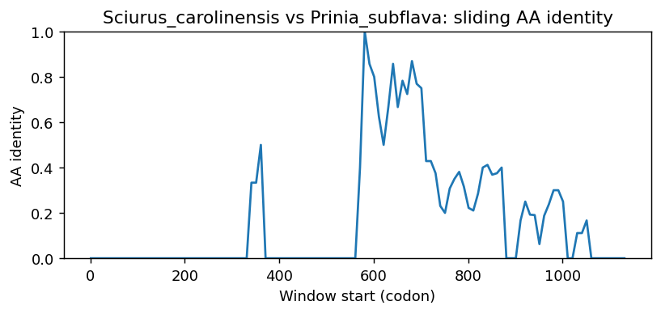
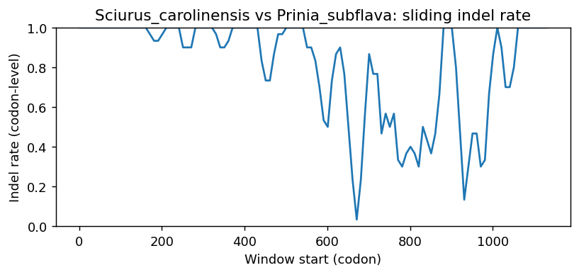
Sciurus_carolinensis vs Rattus_norvegicus
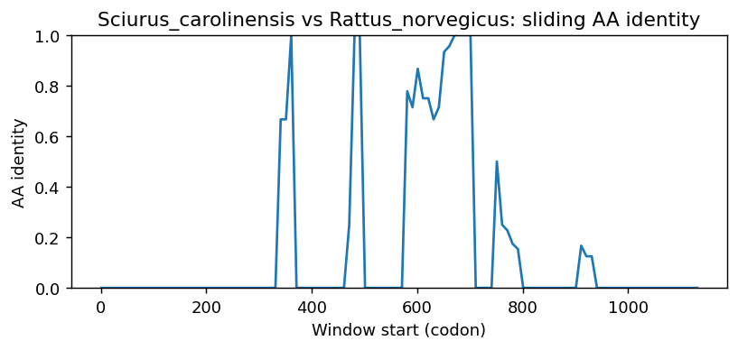
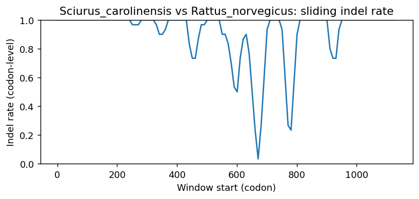
Sciurus_carolinensis vs Neopsephotus_bourkii
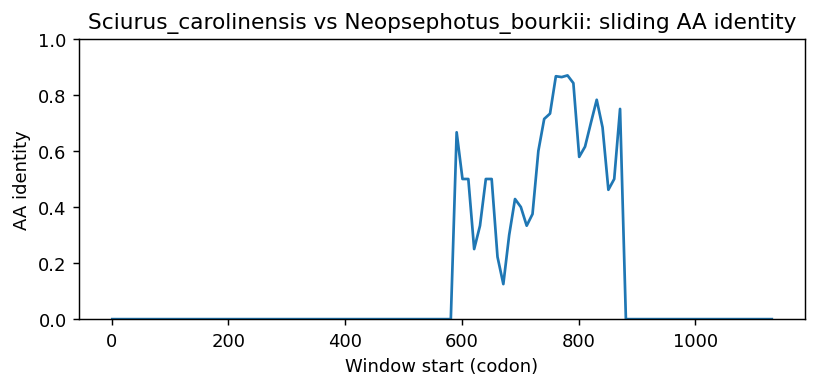
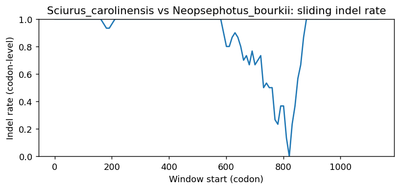
Sciurus_carolinensis vs Pelobates_fuscus
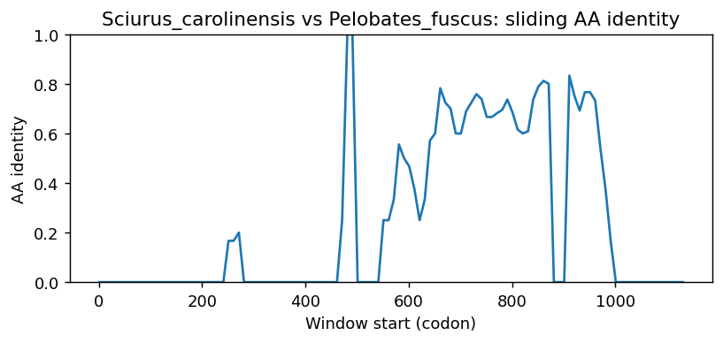
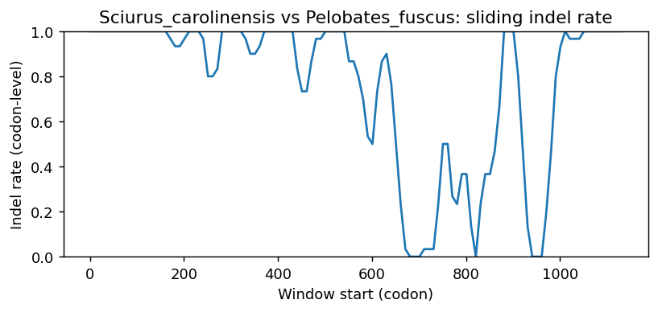
Sciurus_carolinensis vs Chamaea_fasciata
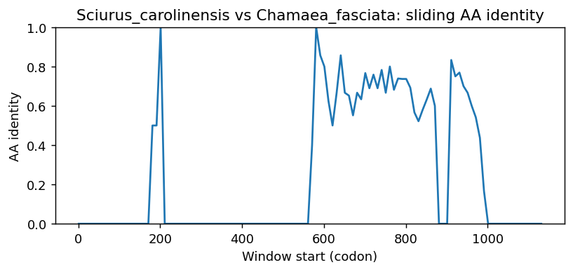
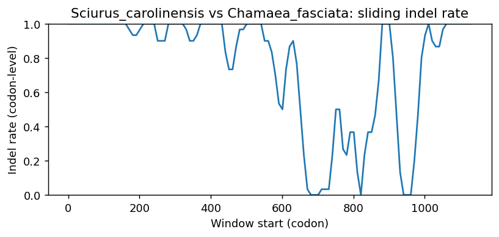
Sciurus_carolinensis vs Haliaeetus_albicilla
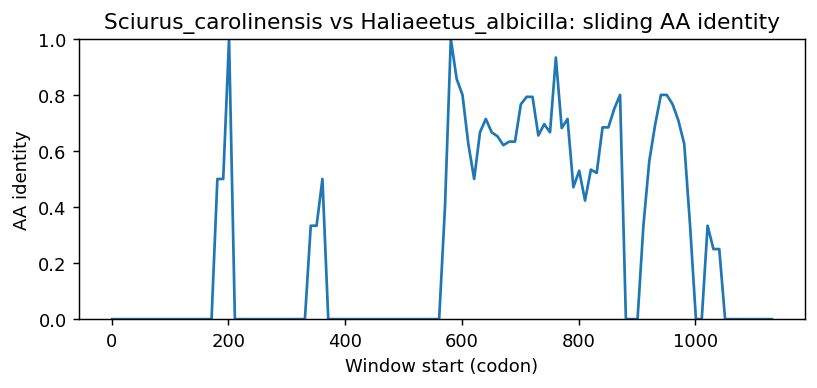
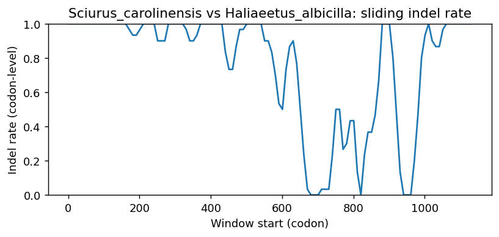
Methods (brief)
- CDS are translated (genetic code 1); proteins aligned by MAFFT when available, otherwise a progressive global aligner (BLOSUM62). Protein MSA is back-translated into a codon MSA.
- Pairwise metrics: AA/NT identities on aligned nongap positions; Ts/Tv; single-hit syn/nonsyn counts; gap events and largest contiguous gap cluster (codons); sliding-window AA identity and codon-level indel rate.
- Per-sequence diagnostics: GC content/skew, CpG density, AA low-complexity fraction via SEG-like entropy windows (win=12, H<2.2), and NT tandem repeats (homopolymers =5; di-nt =4 copies; tri-nt =3 copies).
- Correlations: Pearson/Spearman between AA identity and |GC difference|, mean AA LCR fraction, and mean NT repeat fraction across pairs.
- Risk classifier: combines identity, coverage, longest identical block, low-ID windows, max indel cluster, and up-ranks risk when mean LCR =0.25 or mean repeat =0.10 (soft-masking can remove seeds and reduce sensitivity).
Artifacts: pairwise_metrics.csv, per_sequence_composition.csv, correlations.csv, alignment_protein.faa, alignment_codon.fna.